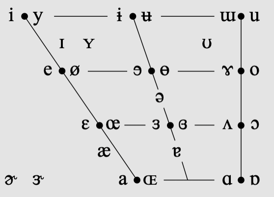
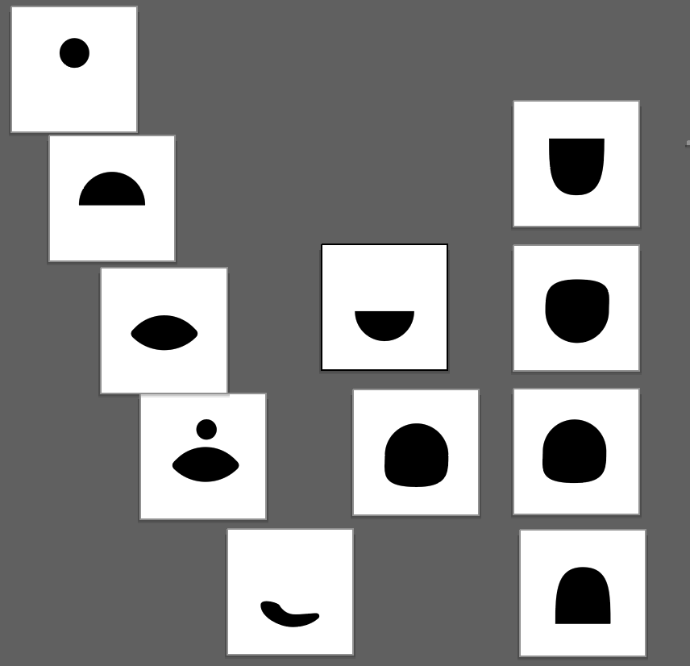

how can we illustrate linguistic phenomenon by apealing to perceptual and visual cues?
This font aims to create a visually intuitive interpretation for several important phonetic qualities, while maintaining recognizability for most alphabetic characters. In particular, it focuses on the following.
Sonority is roughly defined as the loudness of a sound relative to other sounds of the same pitch. The sonority hierarchy is as follows:
| vowels a e i o u ɪ æ ʌ ʊ ɒ ə |
glides w j (pronounced y) |
liquids l r |
nasals m, n ŋ |
obstruents p t k b d g f v s z ʃ (2nd sound in "chip") ʒ (2nd sound in "judge") |
These classes are visualized by glyph width, with length 5, 4, 3, 2 and 2 respectively.
Where possible, the voicing attribute is conveyed by a single visual difference. This is illustrated by the following pairs for voiceless and voiced stops:
Stops can be identified by a characteristic vertical line, indicating the nature of the sound as a sudden burst or release of pressure:
Fricatives indicate roughness, friction, and noise. Voicing in fricatives "s, z, ʃ,ʒ" is visualized by hard edges:
I haven't had the chance to change the labiodental fricatives "f,v" to follow this pattern, suggestions are welcome
When we pronounce words, we use different sounds than what is written. There are around eleven vowels in English pronunciation. Here is the IPA chart for vowels. Back=Heavy=Dark, Front=Light=Bright. The vowels "u" and "oo" are back vowels. These are visualized as heavy, full shapes:
 That quick beige fox jumped in the air over each thin dog. Look out, I shout, for he's foiled you again, creating chaos.
ðæt kwɪk beɪʒ fɑks dʒʌmpt ɪn ði eər oʊvər itʃ θɪn dɔɡ. lʊk aʊt, aɪ ʃaʊt, fɔr hi'z fɔɪld ju əɡɛn, krieɪtɪŋ keɪɑs.
Since then, I need as many edible objects around me as possible. Like my futon. It's from this place in Finland. Cost me $2,500, but the entire futon is edible. They market them to Japanese people who are worried about earthquakes and being traped alive under rubble.
sɪns ðɛn aɪ nid az mɛni ɛdɪbl ɑbjɛkts əraʊnd mi əz pɑsəbl laɪk maɪ fjutɑn ɪts frəm ðɪs pleɪs ɪn fɪnlənd kɑst mi tu tuzənd faɪv hʌndrəd bʌt ðə ɪntaɪr fjutɑn ɪz ɛdəbl deɪ mɑrkɪt ðɛm tu ʤəpæniz pipəl huɑr wɜrid əbaʊt ɜrθkwɛɪks ənd biɪŋ træpt əlaɪv ʌndər rʌbəl